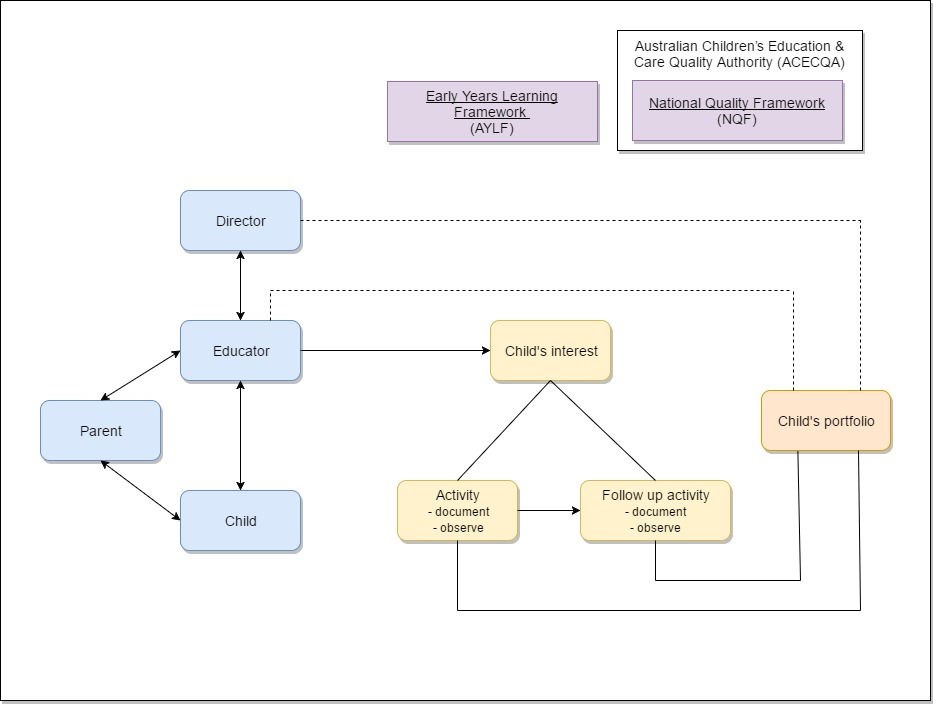

Our client is the Kids’ Uni, which are a childcare centre, that currently performs their business processes predominantly via paper.
The childcare is comprised of the following:
- Supervisor
- Director of Childcare
- Uni Childcare staff (approximately 30 users)
- Parents and Carers of child care children
- Children that attend the Kids’ Uni
At Kids’ Uni Childcare Centre, employees’ workflow is guided by Early Years Learning Framework (EYLF) and National Quality Framework (NQF), as it can be seen from the diagram below.
For more information about our client, please refer to the Kids' Uni Website
The end users of this project will be on a broad spectrum. End users will be made up of individuals ranging from the ages 17-65, with different abilities, backgrounds and experiences. Each end user will be at a different level of knowledge in regard to using technology to perform business operations.
To accommodate for the possible technological gap, or reluctance to use a technology based solution, we are designing our solution to be user-centred and intuitive to use. This approach will acknowledge the needs of all members of the childcare.
Programming in Early Years involves educators observing and documenting learning that happens with young children. As this process can be complex and require attention from multiple individuals, Kids’ Uni is currently facing issues with scheduling, timetabling, workflows, data capture, data presentation, and an administrative level that can direct the workflow, with their observation and documentation of the learning that happens with young children.
As of now, they have been using pen and paper methods, Microsoft Word templates (which some staff continuously remake on the spot rather than use a standard template each time), as well as using a Facebook page to complete some of the documentation. However, these processes have been lacking efficiency and integration, and there is missing documentation due to the process being too time consuming and there being no official system in place. This consequently creates the need for a more engaging and effective system.